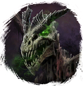
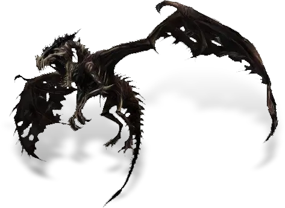
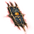

Открыть в интерактивной вики →

| Уровень | лёгк. 60 / норм. 75 / тяжел. 95 |
|---|---|
| Зоны атаки | ближняя, дальняя, ментальная |
| Шанс дропа 100% — уровни | лёгк. 1-45 / норм. 1-45 / тяжел. 1-65 |
| Шанс дропа 90% — уровни | лёгк. 46-60 / норм. 46-60 / тяжел. 66-80 |
| Шанс дропа 70% — уровни | лёгк. 61+ / норм. 61+ / тяжел. 81+ |
| Группа боссов | Страх |
| Сила (PvE) | лёгк. 1915 / норм. 2912 / тяжел. 5427 |
| Аспект арены | Hegun |
| Здоровье | лёгк. 9400 / норм. 19 000 / тяжел. 34 000 |
| Мана | 17 000 |
| Выносливость | 17 000 |
Команда

Навыки


Дроп
 Элементарный глиф
Элементарный глиф  Ученический глиф
Ученический глиф 

Путь страха

 II-IV
II-IV  Гроссмейстерский глиф
Гроссмейстерский глиф 
 Даймонит 10
Даймонит 10 | Рары | Синергетики | Эпики | |||
 Рары Рары  Рары Рары  Рары Рары | 20-40 ур. |  | |||
Прочее:  Элементарный глиф Элементарный глиф  Ученический глиф Ученический глиф  Путь страха Путь страха | |||||
Требования для входа
тяжел.: Путь страха
Путь по картам
Статистика
 |  |  | |||
| Уровень: 60 | Уровень: 75 | Уровень: 90 | |||
Здоровье: 9 400 Мана: 17 000 Выносливость: 17 000 | Здоровье: 19 000 Мана: 17 000 Выносливость: 17 000 | Здоровье: 34 000 Мана: 17 000 Выносливость: 17 000 |
Умения
| Кровотечение Обычная атака | Дыхание Теневой Удар | Отупление Паника Укол Куклы Отравление |
Иммунитеты / особые умения
-
Локация
Логово Гартмога